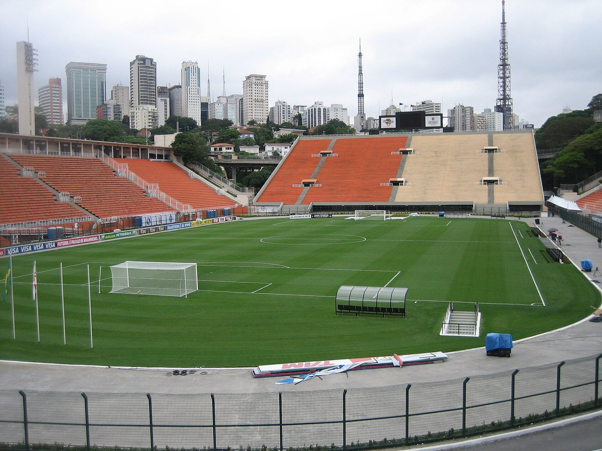

Hospedagem · Perdizes
Perto da arena, longe da confusão: onde ficar em Perdizes para show e jogo

Resumo rápido
- Allianz Parque e Nubank Parque são o mesmo lugar. Use os dois nomes na busca e no GPS até o hábito mudar.
- A arena cabe 43.713 pessoas em jogos e até 55 mil em shows. Sair dali não é o mesmo que sair de um teatro.
- Hotel na porta resolve a caminhada. Quase nunca resolve o sono: fluxo, buzina, aplicativo lotado, gente que ainda está na festa.
- Perdizes é o meio-termo da zona oeste: bairro residencial, minutos de carro da arena e do metrô Sumaré.
- Se o compromisso for no Pacaembu, o volume é menor e o estádio já está dentro do bairro. O critério do sono continua o mesmo.
Quando alguém pesquisa “onde ficar perto do Allianz Parque”, o Google ainda entende o pedido. O estádio, no papel, já não se chama mais assim.
Desde 11 de junho de 2026 o nome oficial é Nubank Parque. A troca saiu de um acordo de naming rights e de uma votação pública: Nubank Parque ficou com 47,5% dos votos, à frente de Nubank Arena (29,8%) e Parque Nubank (22,7%). O site do Palmeiras e o portal da arena já usam o nome novo. Quem busca Allianz Parque é redirecionado.
Isso importa para quem viaja. O ingresso, o grupo e o GPS ainda dizem Allianz. O letreiro e o site dizem Nubank. A rua é a mesma: Avenida Francisco Matarazzo, 1705, Água Branca. A pergunta boa não é o patrocinador. É onde você quer acordar no dia seguinte.
O que a busca entrega (e o que ela esconde)
A primeira página de “hotel perto do Allianz Parque” é um cardápio de proximidade. Flat em frente, ibis na Barra Funda, hostel barato, opção em Perdizes. Os guias repetem o mesmo ranking: quem está a 100 metros ganha.
Isso é útil se o único critério for atravessar a rua depois do último bis. É incompleto se a viagem tem mais de uma noite, se você viaja com criança, se o show termina perto da meia-noite ou se o jogo é no fim de semana e você ainda quer a cidade no dia seguinte.
A busca otimiza o metro até o portão. Quase ninguém pergunta o que acontece depois do portão.
Três coisas os listicles raramente dizem:
- A arena é de escala grande. São 43.713 cadeiras em jogo e até 55 mil pessoas em show, segundo o Palmeiras. O entorno imediato absorve essa massa: filas de aplicativo, rua fechada, comércio no pico.
- “Perto” no mapa não é “perto a pé depois das 23h” se você não conhece a quadra. Barra Funda e Água Branca mudam de caráter entre o apito inicial e a saída.
- Quem vem a São Paulo por um evento quase sempre tem um segundo ato: almoço, um compromisso na Oscar Freire, o voo no dia seguinte. Dormir colado no estádio pode alongar esse segundo ato, não encurtar.
Duas arenas na zona oeste: Nubank Parque e Pacaembu
A zona oeste concentra dois destinos de público a poucos minutos um do outro. Vale tratá-los juntos, com pesos diferentes.
O Nubank Parque (ainda Allianz Parque na boca de muita gente) é a casa do Palmeiras e uma das arenas mais usadas do país para turnê. Inaugurada em 2014 no lugar do Palestra Itália, ela foi feita para jogo e espetáculo. Se o ingresso é de show ou de Brasileirão, é deste fluxo que você precisa sair com dignidade.
O Pacaembu pesa menos neste roteiro, mas entra na mesma conta. O estádio municipal Paulo Machado de Carvalho, agora Mercado Livre Arena Pacaembu, reabriu em 25 de janeiro de 2025. A capacidade caiu para cerca de 25 a 26 mil lugares: menos arena-show, mais estádio de bairro, com o Museu do Futebol e a silhueta art déco. Quem vem a um jogo ou a um evento médio no Pacaembu não enfrenta o mesmo volume do Nubank Parque. Enfrenta outra coisa: ruas de casarão, encosta, aplicativo que sobe devagar.
Se o compromisso é no Pacaembu, ficar “na porta” faz ainda menos sentido do que na Matarazzo. O estádio já está dentro de um tecido residencial. A base boa é a que deixa você voltar em poucos minutos sem escolher a esquina mais barulhenta da saída.
Para um mapa de parques, metrô e eixos da região, o guia de O Entorno organiza distâncias e tempos a partir de Perdizes.

“Perto” não é um número só
Até 400 metros
Você cruza a rua. Ótimo para quem chega tarde, viaja leve e vai embora cedo. Frágil quando o hotel compartilha a mesma onda de gente e o mesmo preço inflado de fim de semana de arena.
De 1 a 2,5 km
Caminhada longa com criança; curta de carro ou de aplicativo se a via não estiver travada. É a faixa em que Perdizes aparece de verdade: ruas de casa, comércio de bairro.
Além de 4 km
A cidade “turística” ganha (Paulista, centro). A volta depois do evento perde. Em noite de lotação, o aplicativo atravessa a mesma frente de arena que você quis evitar.
Não existe raio moralmente superior. Existe combinação: duração da estadia, hora do fim, disposição de andar, tolerância a barulho.
Depois do show ou do jogo: o critério que o hotel na porta não resolve
Quem já saiu de um show grande em São Paulo conhece a sequência: banheiro, portão, calçada, celular com pouca bateria, estimativa de 25 minutos que vira 50.
O hotel em frente corta o aplicativo. Não corta o corredor cheio, a conversa alta no elevador, o grupo que decidiu esticar a noite no saguão. Em fim de semana de Palmeiras ou de turnê, esse hotel vira extensão da arena.
O critério útil, então, não é “quantos metros até o acesso”. É:
- Consigo dormir duas horas depois do último número?
- Consigo chegar sem depender de um único acesso congestionado?
- No dia seguinte, acordo em bairro ou em operação de evento?
O metrô ajuda no primeiro trecho (Barra Funda no eixo da arena e, do lado de Perdizes, Sumaré na Linha 2-Verde), mas não resolve a última milha lotada nem o retorno depois que o pico já passou.
Por isso tanta gente que “queria ficar colada” se arrepende na segunda noite. A primeira foi logística. A segunda era para descansar.
Perdizes como base: calma, metrô, minutos
Perdizes não vende cartão-postal. Vende rotina de cidade: padaria, rua arborizada, prédio baixo, gente que volta do trabalho. Para quem veio só pela arena, parece um desvio. Para quem já cansou de hotel em avenida, costuma ser o ponto.
Do bairro você alcança, em poucos minutos de carro, a Matarazzo (Nubank Parque / Allianz Parque), o Pacaembu, o Parque da Água Branca, a Oscar Freire. A pé ou de aplicativo curto, o metrô Sumaré liga o resto da Linha 2. A Paulista fica perto o suficiente para um compromisso, longe o suficiente para não ser a trilha sonora da janela.
A vantagem de Perdizes em noite de evento é essa assimetria: você está na zona do acontecimento, não no acontecimento. Volta para uma rua que já escureceu de verdade.
Quem busca verde e água no meio da cidade, e não só “perto do estádio”, encontra outro eixo no mesmo bairro. Vale a leitura de A Natureza.
Quando uma residência faz mais sentido que o hotel na esquina
Hotel na porta continua sendo a resposta certa para muita gente: conexão cedo, zero conversa, mala pequena, uma noite só.
Uma residência real em bairro calmo começa a ganhar quando a viagem pede o contrário: duas ou três noites, casal ou família pequena, vontade de terminar o dia ao ar livre e não no saguão, e aceitação de que alguém recebe você, com combinados claros.
Nesse meio-termo entra a suíte privativa em residência: quarto seu, muitas vezes com entrada independente pela área externa, e lazer de casa sem assumir o imóvel inteiro. Não é o hotel anônimo. Não é alugar um casarão para gerir sozinho depois do show.
Sinais de que o formato cabe:
- a casa ainda se comporta como casa (poucas suítes, não mini-hotel)
- o lote tem o que o flat não tem: ar, água, um canto para sentar sem parecer área comum de condomínio
- o bairro trabalha a favor do sono, não só do deslocamento
- o anfitrião explica limites sem teatro
Ficar em uma mansão de verdade, no sentido de residência com escala e não de adjetivo de anúncio, costuma entregar o que o listicle de “100 metros da arena” não mede: o silêncio depois. Casas com história e arquitetura clássica carregam essa escala no corpo. Você sente antes de saber o ano da construção. Mais sobre esse tipo de morar em A História.
Uma leitura concreta em Perdizes: a Mansão do Lago
Se os critérios acima ressoam, a Mansão do Lago é como recebemos em Perdizes: uma suíte privativa na propriedade, com acesso exclusivo por fora da casa (entrada própria), independente da circulação interna da família. Não empilhamos quartos. Não operamos como hotel de estádio.
A estadia combina suíte (cama de casal, opções de leito extra até 5 pessoas) e o lazer da residência: lago com ponte, piscina com cascata, jardins, academia, sauna, área gourmet e o Pub Inglês. Quem recebe são os anfitriões, Cintia e Guilherme.
Do portão da casa, em números que usamos no site:
- Estádio do Pacaembu: cerca de 1,1 km (5 min de carro)
- Metrô Sumaré: 1,2 km
- Nubank Parque (Allianz Parque): cerca de 2,1 km (8 min de carro)
Não é atravessar a rua. É voltar para rua quieta em menos tempo do que muita gente gasta na fila do aplicativo na porta da arena.
Imagens em Galeria. Datas e valores em Hospedagem. Eventos pequenos na casa seguem outro filtro (preservar o uso residencial): Eventos.
Como reservar
Preferimos a reserva direta: costuma ser a via com melhor preço (a partir de R$ 389 por noite, sem taxas de plataforma). A suíte também aparece no Airbnb e no Booking.
Para fim de semana de show ou clássico, escreva cedo. A suíte é uma só. Consulte a página de Hospedagem ou fale pelo WhatsApp.
Reserve sua estadia
Melhor preço na reserva direta. Sem taxas de plataforma.
Perguntas frequentes
Allianz Parque e Nubank Parque são o mesmo estádio?
Sim. O nome oficial passou a ser Nubank Parque em 11 de junho de 2026. Allianz Parque ainda é o termo que a maioria pesquisa. O endereço continua na Avenida Francisco Matarazzo, 1705.
É melhor ficar colado na arena?
Se a viagem é uma noite e a prioridade é andar cerca de 100 metros, o hotel na porta resolve. Se você quer dormir de verdade e ter um dia seguinte na cidade, uma base em Perdizes a 1 ou 2,5 km costuma funcionar melhor.
E se o jogo for no Pacaembu?
O Pacaembu (Mercado Livre Arena) é menor e mais residencial depois da reforma de 2025. A mesma lógica vale, com ênfase ainda maior em não escolher a rua da saída. Da Mansão do Lago são cerca de 1,1 km.
A suíte na Mansão do Lago fica no meio da casa da família?
Não. O acesso é pela área externa, com entrada própria. As áreas de lazer entram na estadia por combinado. As áreas privativas da família não.
Quantas pessoas cabem na suíte?
Até 5 hóspedes. Crianças menores de 2 anos não pagam e contam no limite de 5.